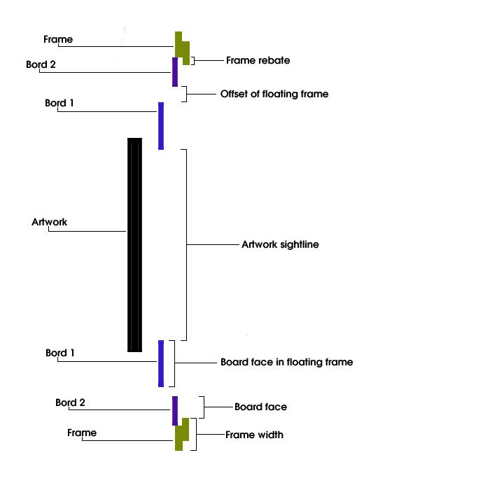

Designs
Below is a transverse drawing that
displays the standard definitions for measurement in RSF.

See
also:
Definitions
Design
Methods
Setting
preferences
Creating
a new design
Adding
items to a design
Inserting
items into a design
Deleting
an item from a design
Opening
an existing design
Closing
designs
Printing
a design
Updating
preferences of a design
Editing
method preferences of a specific design
Deleting
designs from the database